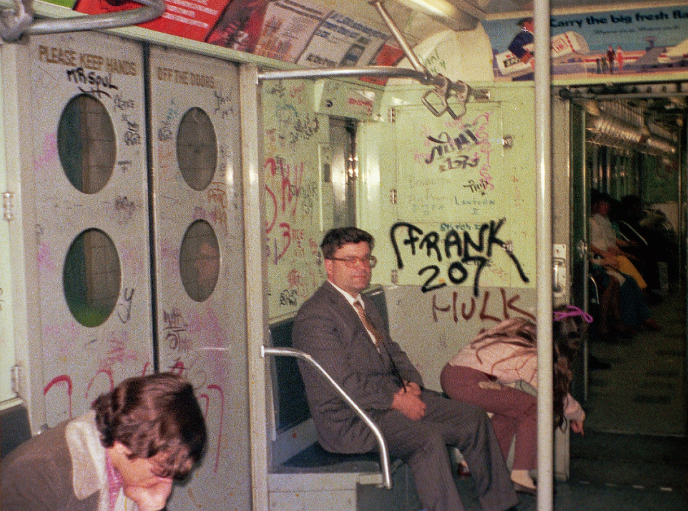
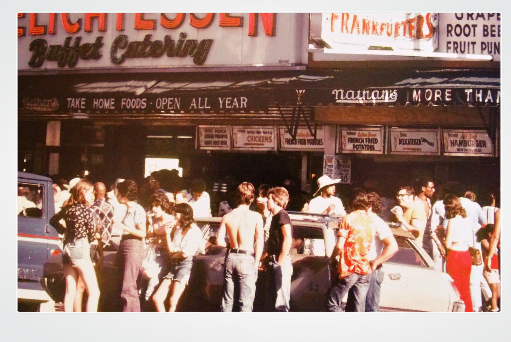
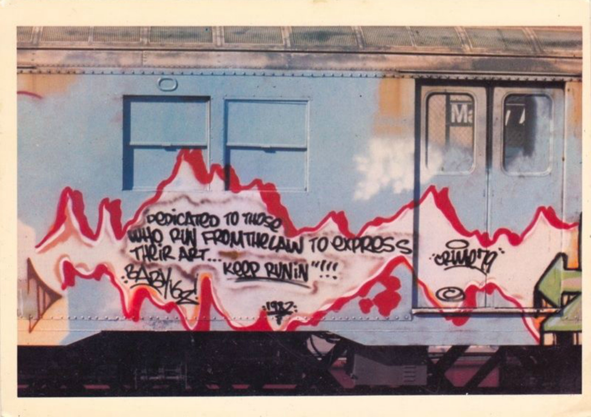
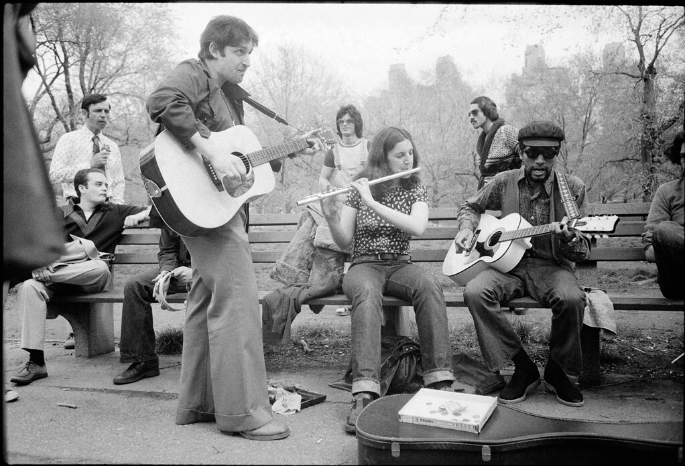
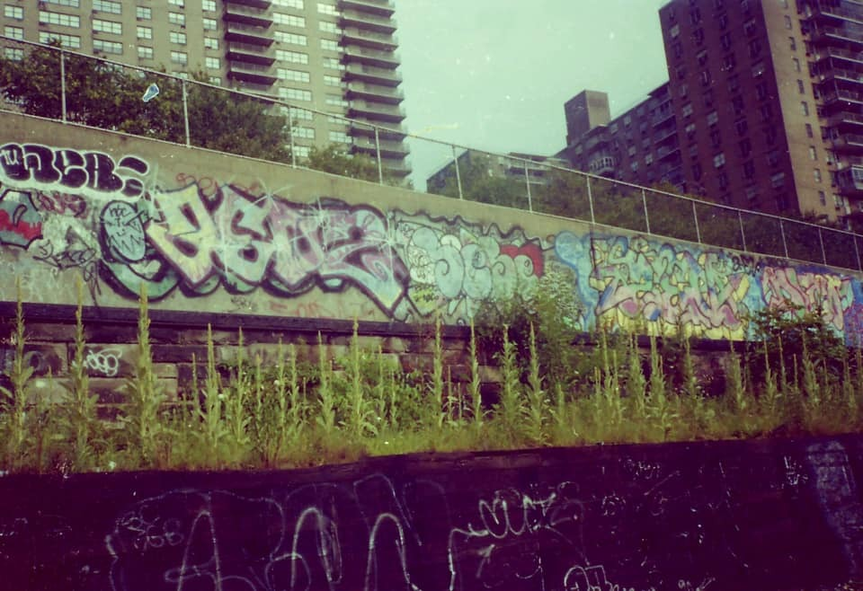
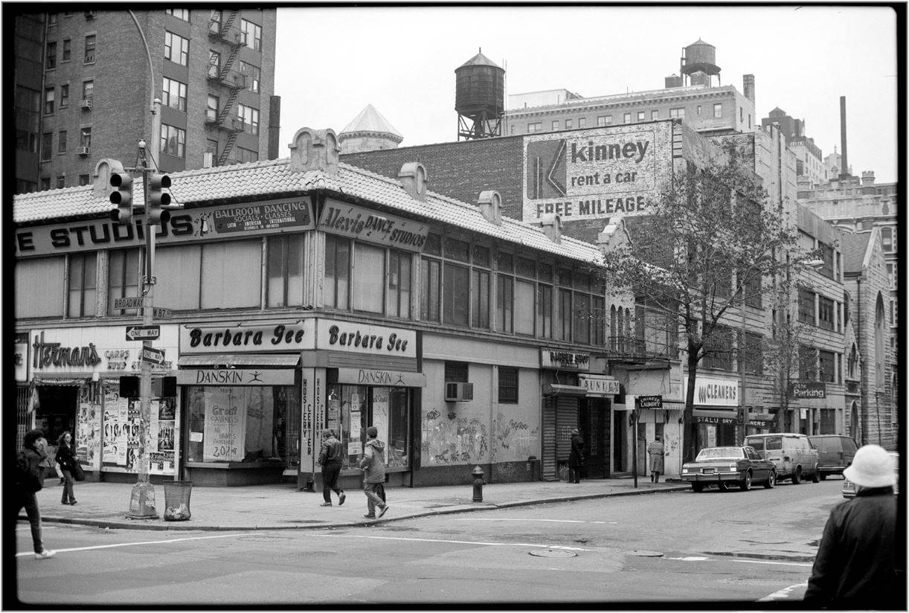

Say “cheese”!
Say “cheese”!

You think that’s Frank 207?

Hangin’ at Coney Island, 1973

Crime 79

Halloween in the 70s

Flute and guitar in Central Park, 1974

13th Ave and New Utrecht at 54th-55th Street, Boro Park, Brooklyn

Boro Park, Brooklyn. 57th Street Christmas, 1977.

U turn me on, 70s style

Lex and 71st, 1979

Madison and 71st, 1979

West Side Drive near 72nd Street

87th and Broadway

96th Street, 1970. Looking West towards the Hudson River.

Angel getting ice cream, 1976
Riverside Park, 1976

Canal Street, 1970s
Broken and missing signage in 1983